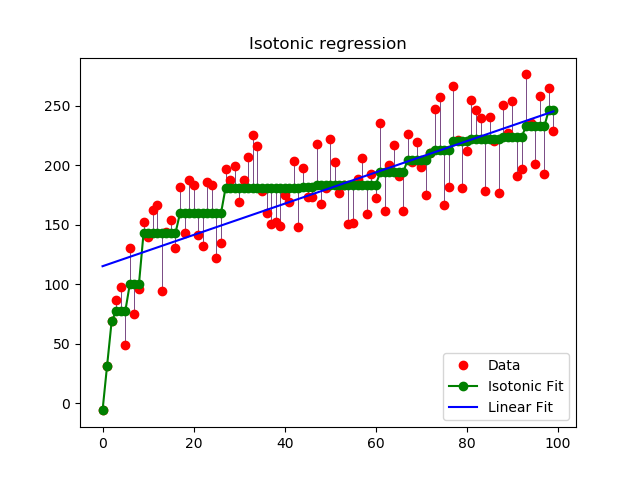

Note
Click here to download the full example code
保序回归¶
对生成的数据进行保序回归的例子。保序回归发现一个函数的非递减近似， 同时最小化训练数据的均方误差。 这种模型的好处是它不采取任何形式的目标函数，如线性。 为便于比较，还提出了一种线性回归方法。
print(__doc__)
# Author: antares
# License: BSD
import numpy as np
import matplotlib.pyplot as plt
from matplotlib.collections import LineCollection
from sklearn.linear_model import LinearRegression
from sklearn.isotonic import IsotonicRegression
from sklearn.utils import check_random_state
n = 100
x = np.arange(n)
rs = check_random_state(0)
y = rs.randint(-50, 50, size=(n,)) + 50. * np.log1p(np.arange(n))
# #############################################################################
# 拟合 IsotonicRegression 和 LinearRegression 模型
ir = IsotonicRegression()
y_ = ir.fit_transform(x, y)
lr = LinearRegression()
lr.fit(x[:, np.newaxis], y) # x 必须是 2d 对于 LinearRegression
# #############################################################################
# 绘制结果
segments = [[[i, y[i]], [i, y_[i]]] for i in range(n)]
lc = LineCollection(segments, zorder=0)
lc.set_array(np.ones(len(y)))
lc.set_linewidths(np.full(n, 0.5))
fig = plt.figure()
plt.plot(x, y, 'r.', markersize=12)
plt.plot(x, y_, 'g.-', markersize=12)
plt.plot(x, lr.predict(x[:, np.newaxis]), 'b-')
plt.gca().add_collection(lc)
plt.legend(('Data', 'Isotonic Fit', 'Linear Fit'), loc='lower right')
plt.title('Isotonic regression')
plt.show()
Total running time of the script: ( 0 minutes 0.475 seconds)